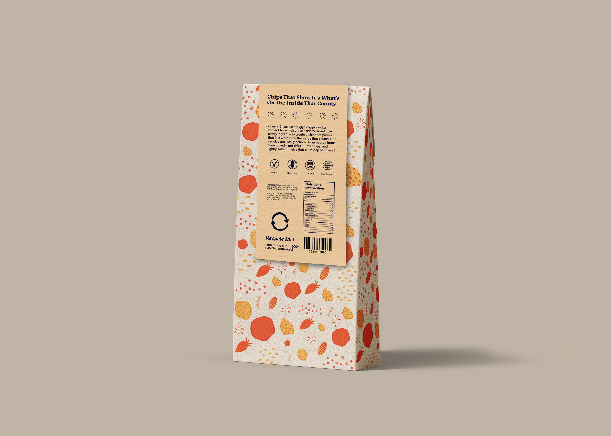
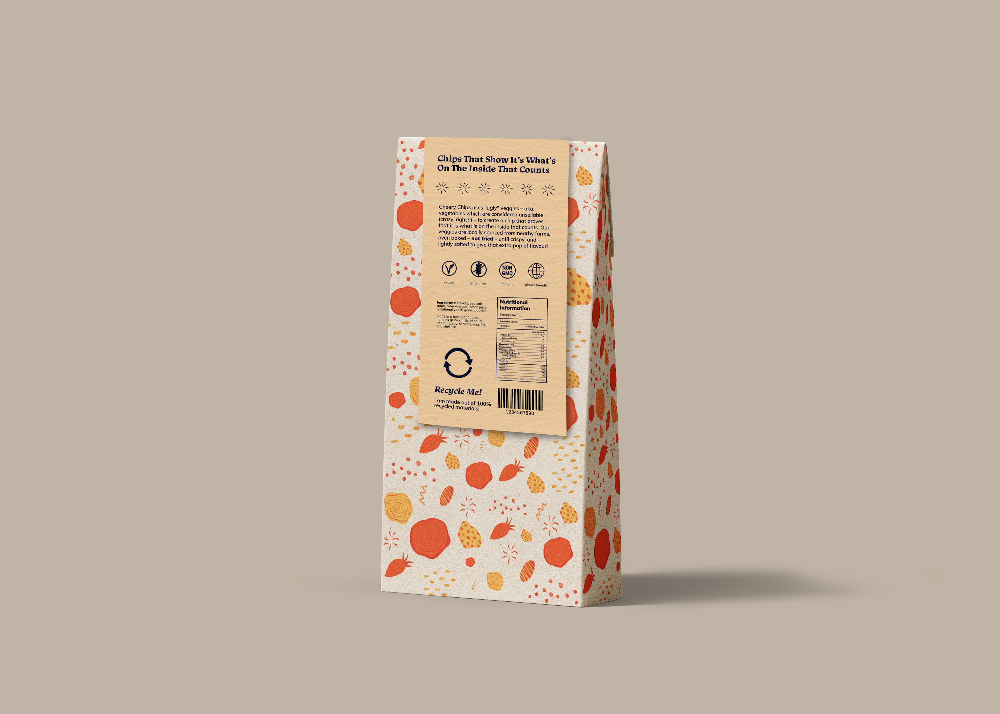
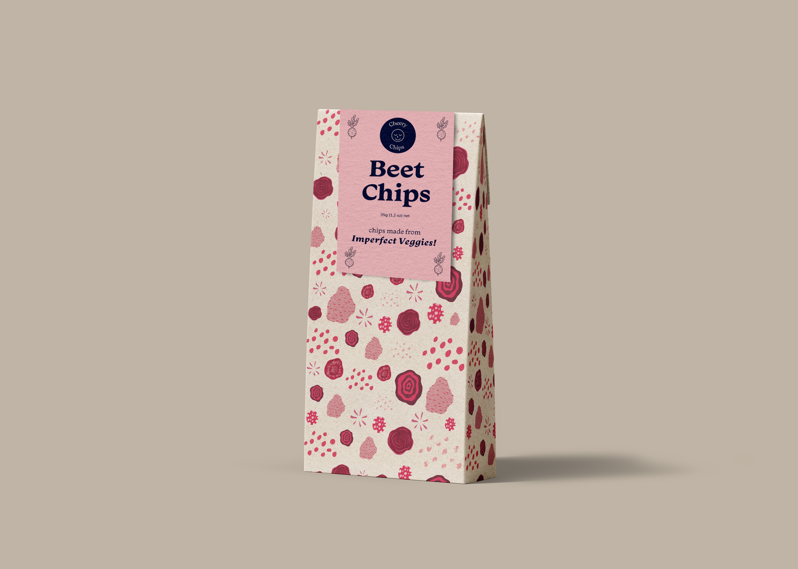
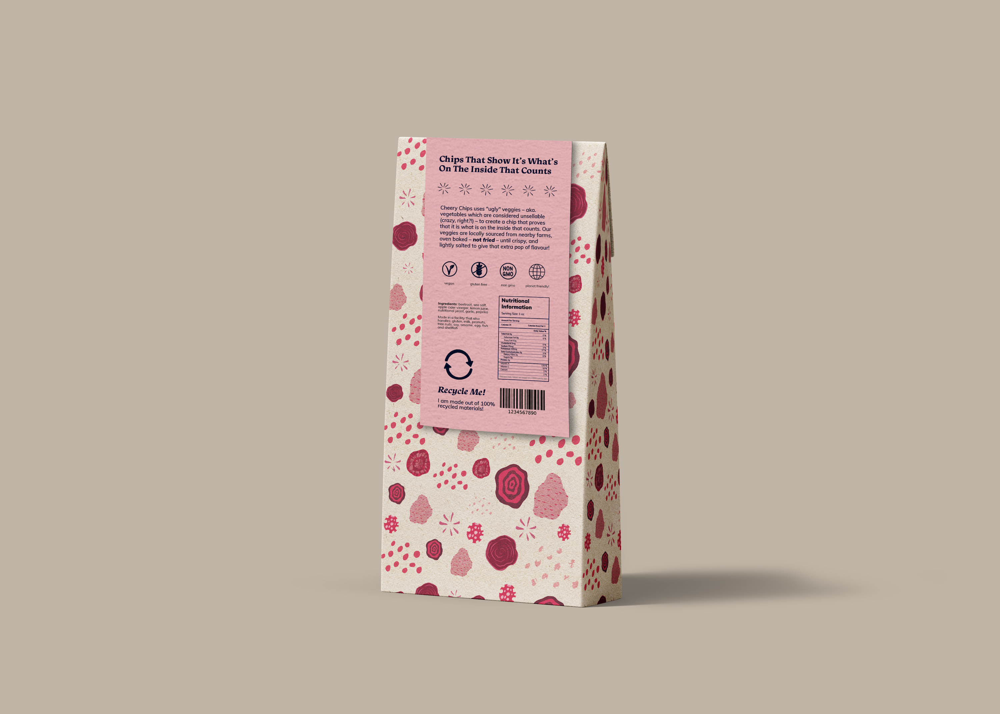
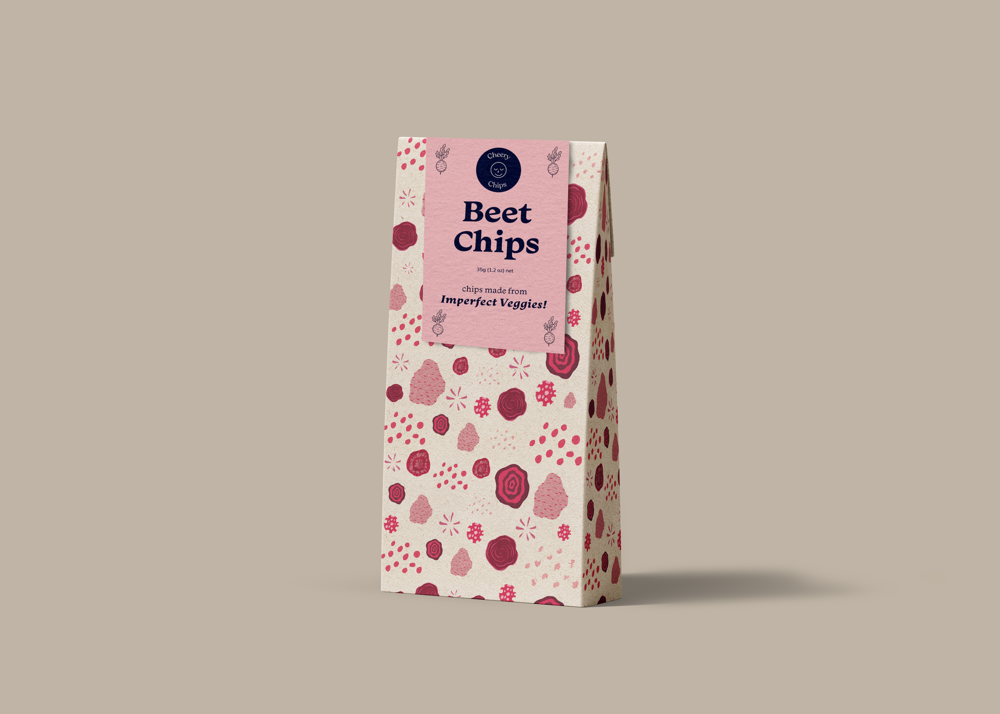
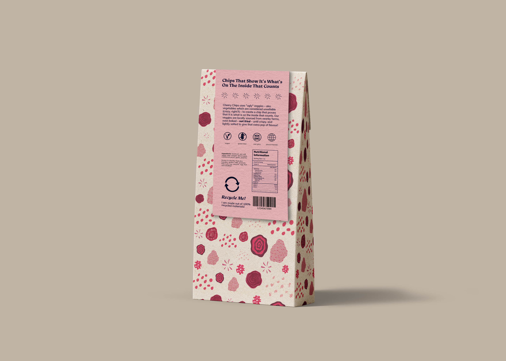
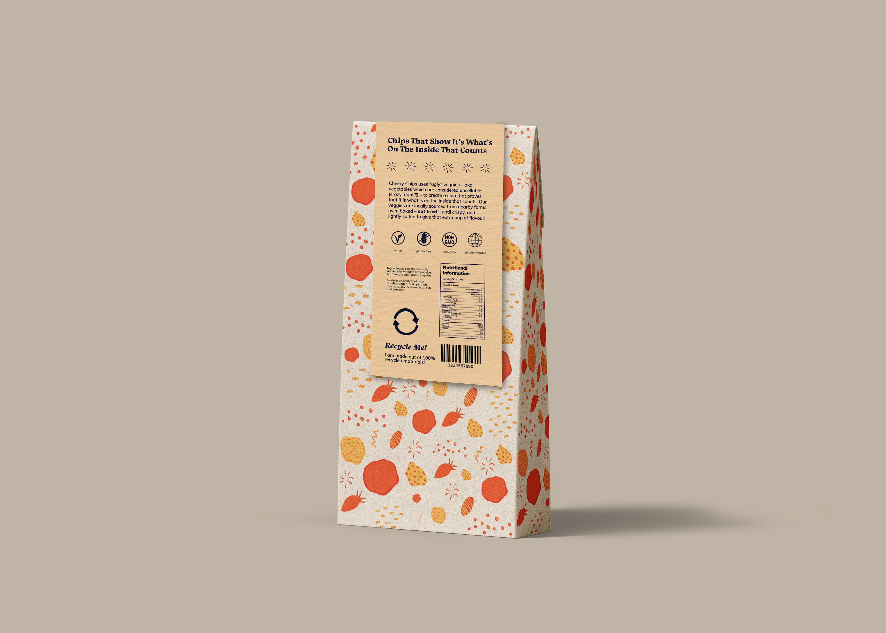
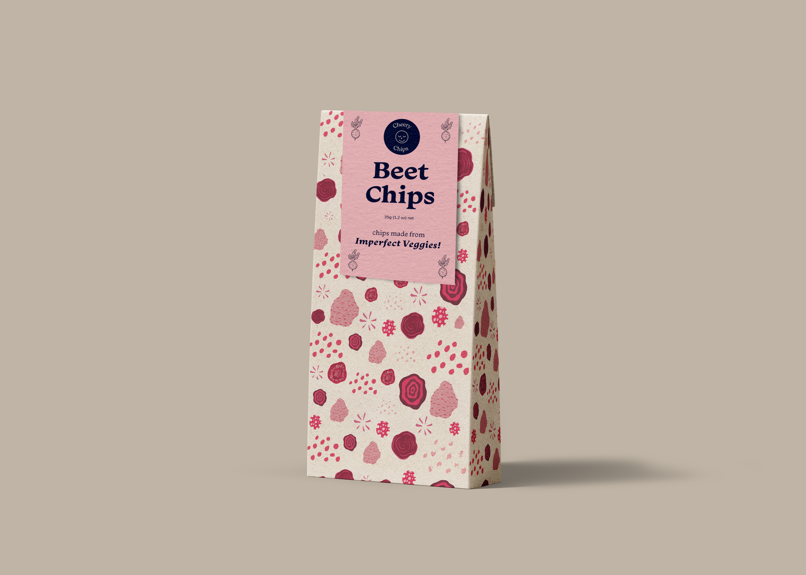
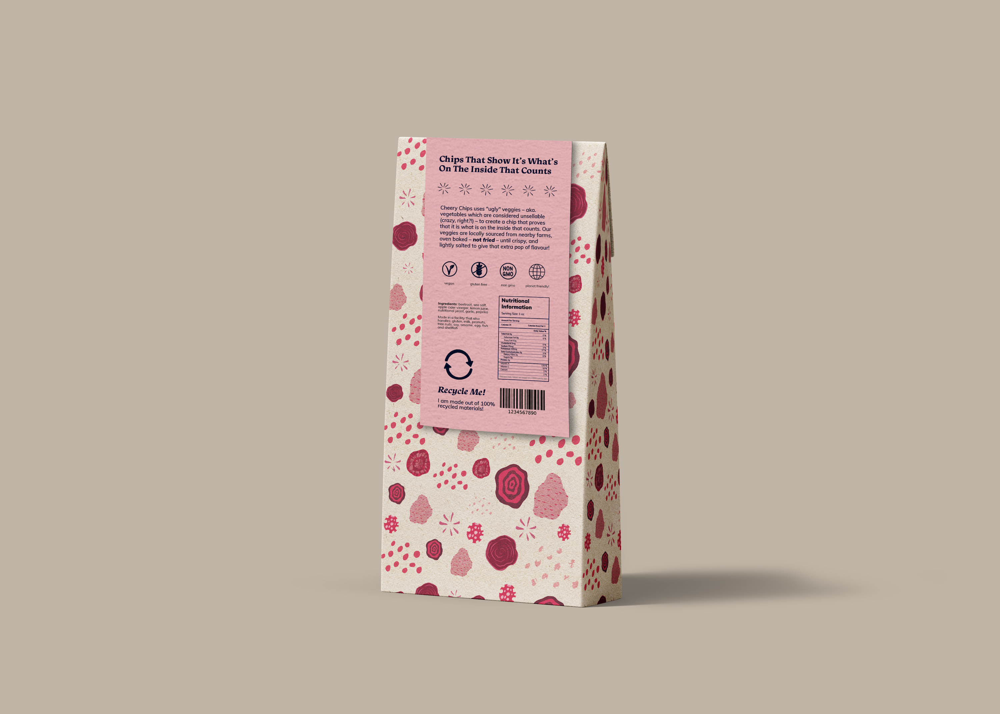

 



For this brief, we were asked to create a set of packaging for a dry food of our choice, with the primary focus being sustainability. I chose vegetable chips because there wasn't much focus on sustainability in this area. Cheery Chips aims to reduce waste by using packaging made entirely from 100% recyclable materials. The packaging design features a fun, playful style that reflects the brand' motto, "it's what's on the inside that counts," referring to taste being more important than looks. Each chip flavor is represented by a different color and features loose, abstract illustrations to emphasize a sense of uniqueness and imperfection while still maintaining cohesion as a set.


